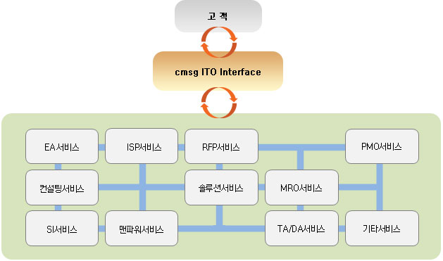

아웃소싱 서비스
cmsg의 시스템통합 서비스는 다양한 인프라 환경에서 최상의 운영을 위한 각종 IT 인프라 구축과 이와 연관된 기술을 통한
설계에서 구축, 운영 지원 등에 이르는 전반적인 통합 기술지원 서비스로서 이미 다수의 경험을 가지고 있습니다.
이러한 특화된 기술서비스는 여러 고객들로부터 성공적인 기술 서비스 지원 수행능력을 인정 받고 있으며, 앞으로는 최신의
가상화 기술을 통한 정보시스템 통합에 특화된 기술 서비스 제공을 통해 고객에게 진정한 비즈니스 및 기술가치를
제공하도록 하겠습니다.
-
 cmsg 만의 ITO 서비스
cmsg 만의 ITO 서비스
인터페이스에 관한 혁신을 수행

고객은 자신의 요구사항에 맞춰서 적절한 IT 인프라에 대해서 협의하고,
협의된 IT 인프라를 안정적으로 제공하고, 유지보수 해 줄 업체를 필요로 합니다.
하지만 현실은 포인트 서비스 업체는 많으나 컨시어지 서비스처럼 고객입장에서 통합적으로 문제를 해결해 주는
업체를 찾기가 어렵습니다.
저희는 이런 인터페이스에 대한 혁신이 필요한 시점이라 생각하고, 당사가 추구하는 ITO 사업도
이런 부분에 포커스를 맞추어서, 제공 가능한 서비스 세트를 정의하고,
고객이 선택하게 해서 서비스를 제공하는 방식으로 진행합니다.